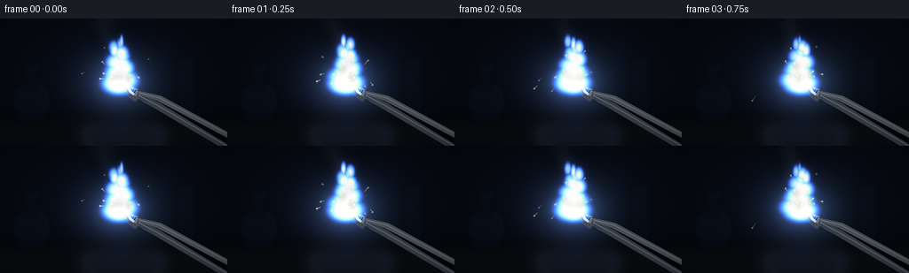
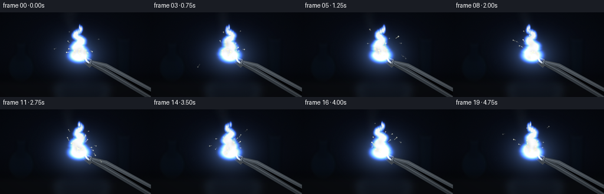
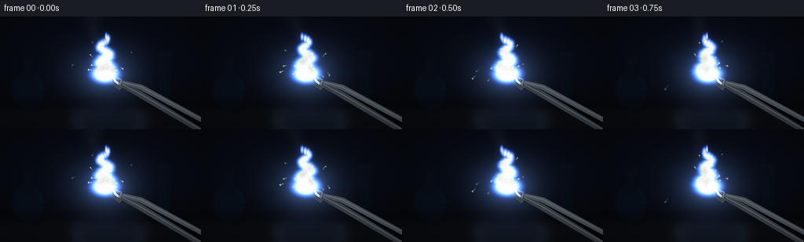
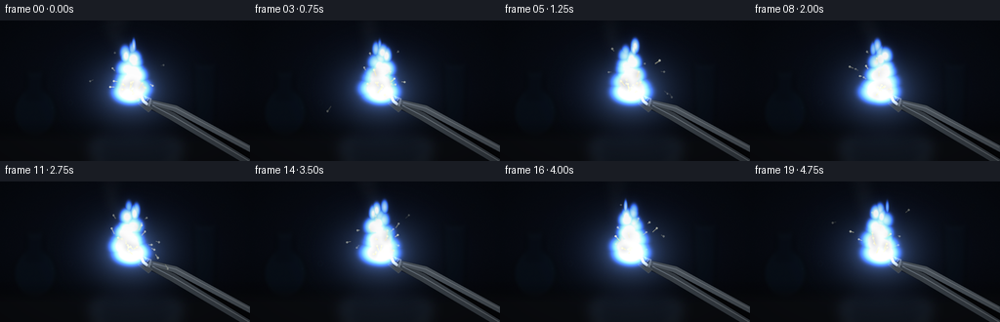

CODING AGENTS AS PIXEL WORLD MODELS
traex/GPT-5.6-Sol · phygen_127
点击播放 · 原生 RGB 像素
逐轮保存的候选
回放视频、检查图与代码变化。
每份候选均可单独播放。实际图片检查记录在下方工具轨迹中。
候选 01播放与检查图
点击播放 · 原生 RGB 像素


展开代码变化
--- 上一保存版本
+++ 本次保存版本
@@ -0,0 +1,217 @@
+from pathlib import Path
+import json, math
+import numpy as np
+from PIL import Image, ImageDraw, ImageFilter
+import artifact_io
+
+# Deterministic procedural rendering; no external assets.
+ROOT = Path(__file__).resolve().parent
+spec = json.loads((ROOT / "task_spec.json").read_text())
+W, H, N, FPS = spec["width"], spec["height"], spec["frames"], spec["fps"]
+SS = 4
+w, h = W * SS, H * SS
+rng = np.random.default_rng(127)
+
+Y, X = np.mgrid[0:h, 0:w].astype(np.float32)
+xn, yn = X / SS, Y / SS
+
+def smoothstep(a, b, z):
+ z = np.clip((z-a)/(b-a), 0, 1)
+ return z*z*(3-2*z)
+
+def add_layer(base, layer, gain=1.0):
+ # Screen-like emission blend, preserving rich color near saturation.
+ arr = np.asarray(layer.convert("RGB"), dtype=np.float32) * gain
+ return 255.0 - (255.0-base) * (255.0-arr) / 255.0
+
+def rgba_layer():
+ return Image.new("RGBA", (w, h), (0,0,0,0))
+
+def P(points):
+ return [(int(x*SS), int(y*SS)) for x,y in points]
+
+# Stable background grain, sparse enough to suggest a real sensor rather than animation noise.
+grain = rng.normal(0, 1.2, (h,w,1)).astype(np.float32)
+
+# Pre-generate persistent sparks.
+particles = []
+prng = np.random.default_rng(7231)
+for i in range(155):
+ start = -1.2 + i * (6.6/154) + prng.uniform(-0.035,0.035)
+ # Most sparks fan upward/outward; a few spit horizontally.
+ side = -1 if prng.random() < .52 else 1
+ vx = side * prng.uniform(8, 55) + prng.normal(0,5)
+ vy = -prng.uniform(24, 92)
+ life = prng.uniform(.38, 1.15)
+ x0 = 133 + prng.normal(0,3.0)
+ y0 = 73 + prng.normal(0,2.2)
+ bright = prng.uniform(.55, 1.0)
+ particles.append((start,vx,vy,life,x0,y0,bright))
+
+frames=[]
+for fi in range(N):
+ t = fi / FPS
+ # ---- Dim photographic laboratory backdrop ----
+ rad = np.sqrt(((xn-132)/180)**2 + ((yn-67)/120)**2)
+ base = np.zeros((h,w,3), np.float32)
+ base[:,:,0] = 5.5 + 3.0*(1-rad)
+ base[:,:,1] = 8.0 + 4.3*(1-rad)
+ base[:,:,2] = 13.0 + 8.0*(1-rad)
+ # Cool wall gradient and warm low tabletop.
+ base += np.clip((105-yn)[...,None]/180,0,.18)*np.array([5,8,15],np.float32)
+ base += grain
+
+ env = rgba_layer(); d=ImageDraw.Draw(env)
+ # Far out-of-focus laboratory glassware silhouettes.
+ d.ellipse((14*SS,69*SS,57*SS,119*SS), fill=(8,18,29,155), outline=(25,43,56,70), width=SS)
+ d.rectangle((27*SS,52*SS,44*SS,82*SS), fill=(7,15,24,130))
+ d.ellipse((27*SS,48*SS,44*SS,56*SS), outline=(32,51,65,80), width=SS)
+ d.polygon(P([(198,44),(222,44),(219,110),(201,110)]), fill=(8,16,24,125))
+ d.ellipse((198*SS,39*SS,222*SS,48*SS), outline=(30,49,62,60), width=SS)
+ # Soft distant amber and blue indicator lights.
+ d.ellipse((68*SS,29*SS,72*SS,33*SS), fill=(35,69,89,90))
+ d.ellipse((226*SS,23*SS,230*SS,27*SS), fill=(88,50,18,55))
+ env = env.filter(ImageFilter.GaussianBlur(2.4*SS))
+ bg = Image.fromarray(np.uint8(np.clip(base,0,255)),"RGB").convert("RGBA")
+ bg = Image.alpha_composite(bg, env)
+ base = np.asarray(bg.convert("RGB"),dtype=np.float32)
+
+ # Bench surface and restrained reflection.
+ table = rgba_layer(); td=ImageDraw.Draw(table)
+ td.rectangle((0,115*SS,w,h), fill=(10,12,16,255))
+ td.line(P([(0,115),(256,115)]), fill=(49,53,58,85), width=SS)
+ # blurred pool of light reflected on black bench
+ td.ellipse((94*SS,113*SS,184*SS,151*SS), fill=(45,59,76,70))
+ table=table.filter(ImageFilter.GaussianBlur(7*SS))
+ base=np.asarray(Image.alpha_composite(Image.fromarray(np.uint8(np.clip(base,0,255))).convert("RGBA"),table).convert("RGB"),dtype=np.float32)
+
+ # ---- White magnesium-oxide smoke, behind the flame ----
+ smoke=rgba_layer(); sd=ImageDraw.Draw(smoke)
+ for j in range(13):
+ age = (t + 2.2 - j*.42) % 5.1
+ if age > 3.7: continue
+ yy = 65 - age*22 - 2.2*age*age
+ xx = 133 - age*7 + 5.5*math.sin(age*2.4 + j*1.71)
+ rr = 3.5 + age*4.3
+ a = int(33 * (1-age/3.8) * (0.7+0.3*math.sin(j*2.2)**2))
+ sd.ellipse(((xx-rr)*SS,(yy-rr*.55)*SS,(xx+rr)*SS,(yy+rr*.55)*SS), fill=(190,205,218,a))
+ smoke=smoke.filter(ImageFilter.GaussianBlur(5.2*SS))
+ base=np.asarray(Image.alpha_composite(Image.fromarray(np.uint8(np.clip(base,0,255))).convert("RGBA"),smoke).convert("RGB"),dtype=np.float32)
+
+ # ---- Illumination cast by the sustained reaction ----
+ pulse = 0.97 + 0.025*math.sin(t*5.3) + 0.012*math.sin(t*11.9)
+ rr2=((xn-134)/41)**2+((yn-73)/34)**2
+ local=np.exp(-rr2*1.25)*pulse
+ base += local[...,None]*np.array([44,57,79],np.float32)
+ # very soft blue lens glow
+ rr3=((xn-133)/78)**2+((yn-67)/61)**2
+ base += np.exp(-rr3*2.0)[...,None]*np.array([4,8,17],np.float32)
+
+ # ---- Steel laboratory tongs and crimped silver ribbon ----
+ tong=rgba_layer(); q=ImageDraw.Draw(tong)
+ # cast shadow
+ q.line(P([(263,149),(174,96),(151,86)]), fill=(0,0,0,160), width=8*SS)
+ q.line(P([(258,137),(174,91),(152,84)]), fill=(0,0,0,130), width=7*SS)
+ # two spring-steel arms, perspective polygons
+ q.polygon(P([(256,142),(256,150),(173,101),(151,89),(154,84),(178,94)]), fill=(56,63,70,255), outline=(13,16,20,255))
+ q.polygon(P([(256,128),(256,135),(177,93),(153,86),(155,81),(181,87)]), fill=(74,82,90,255), outline=(16,20,24,255))
+ # crisp highlights
+ q.line(P([(255,144),(177,98),(156,87)]), fill=(149,159,166,165), width=SS)
+ q.line(P([(255,130),(180,90),(157,84)]), fill=(182,191,197,145), width=SS)
+ # jaws and serrations at grip
+ q.polygon(P([(155,80),(145,76),(143,80),(153,88)]), fill=(102,110,115,255), outline=(207,213,215,180))
+ q.polygon(P([(156,90),(144,82),(141,85),(152,94)]), fill=(64,70,74,255), outline=(142,151,156,150))
+ for k in range(4):
+ q.line(P([(146+k*2.3,79+k*.7),(143+k*2.3,83+k*.7)]), fill=(29,34,38,220), width=SS)
+ # Magnesium ribbon: bent, reflective, and visibly consumed at the tip.
+ ribbon_pts=[(151,86),(147,83),(145,78),(140,78),(138,73),(134,71)]
+ q.line(P(ribbon_pts), fill=(36,40,42,255), width=5*SS)
+ q.line(P(ribbon_pts), fill=(185,191,192,255), width=3*SS)
+ q.line(P([(150,84),(146,81),(141,76),(137,73)]), fill=(245,244,231,220), width=SS)
+ # rough oxidized crust near the burning edge
+ q.ellipse((130*SS,68*SS,139*SS,76*SS), fill=(205,205,190,225))
+ q.ellipse((132*SS,69*SS,137*SS,74*SS), fill=(255,244,192,255))
+ base=np.asarray(Image.alpha_composite(Image.fromarray(np.uint8(np.clip(base,0,255))).convert("RGBA"),tong).convert("RGB"),dtype=np.float32)
+
+ # ---- Animated plasma/flame field: brilliant white magnesium with blue-violet fringe ----
+ density=np.zeros((h,w),np.float32)
+ # several rising gaussian lobes, coherent over time
+ centers=[]
+ for k in range(15):
+ u=k/14
+ cy=73-u*47
+ cx=133 + (2.0+4.2*u)*math.sin(1.5*k + t*5.1) + 1.6*math.sin(4.2*u-t*3.2)
+ wx=8.7*(1-u)+1.2 + 1.4*math.sin(k*2.0+t*4.0)**2
+ wy=7.0-2.2*u
+ amp=.48 + .35*(1-u) + .14*math.sin(k*1.37+t*6.2)
+ g=np.exp(-.5*(((xn-cx)/wx)**2+((yn-cy)/wy)**2))*amp
+ density=np.maximum(density,g)
+ centers.append((cx,cy))
+ # Base cup and tiny licking side tongues.
+ density=np.maximum(density, .92*np.exp(-.5*(((xn-134)/10.5)**2+((yn-73)/7.0)**2)))
+ for side,phase in [(-1,.5),(1,2.3)]:
+ cx=134+side*(7+2*math.sin(t*5+phase)); cy=63+3*math.sin(t*4+phase)
+ density=np.maximum(density,.5*np.exp(-.5*(((xn-cx)/3.0)**2+((yn-cy)/9.0)**2)))
+ density=np.clip(density,0,1)
+
+ # blurred low-level emission gives optical bloom but keeps silhouette readable
+ mask=Image.fromarray(np.uint8(density*255),"L")
+ broad=np.asarray(mask.filter(ImageFilter.GaussianBlur(7*SS)),dtype=np.float32)/255
+ tight=np.asarray(mask.filter(ImageFilter.GaussianBlur(2.2*SS)),dtype=np.float32)/255
+ base += broad[...,None]*np.array([28,52,125],np.float32)*pulse
+ base += tight[...,None]*np.array([48,82,145],np.float32)*pulse
+ # Radiating flame emission: electric indigo edge, warm-white core, pure-white reaction center.
+ edge=smoothstep(.035,.28,density)*(1-smoothstep(.25,.55,density))
+ mid=smoothstep(.16,.62,density)
+ core=smoothstep(.46,.92,density)
+ base += edge[...,None]*np.array([44,99,255],np.float32)*pulse
+ base += mid[...,None]*np.array([205,207,170],np.float32)*pulse
+ base += core[...,None]*np.array([250,250,255],np.float32)*pulse
+ # hottest stable ball directly on ribbon
+ hot=np.exp(-.5*(((xn-134)/4.4)**2+((yn-72)/4.0)**2))
+ base += hot[...,None]*np.array([310,296,255],np.float32)
+
+ # ---- Persistent incandescent sparks with motion trails ----
+ glow=rgba_layer(); gd=ImageDraw.Draw(glow)
+ sharp=rgba_layer(); hd=ImageDraw.Draw(sharp)
+ for start,vx,vy,life,x0,y0,bright in particles:
+ age=t-start
+ if age < 0 or age > life: continue
+ fade=(1-age/life)**.55
+ # drag and gravity
+ def pos(a):
+ return (x0+vx*a*(1-.11*a), y0+vy*a+43*a*a)
+ px,py=pos(age)
+ tail_age=max(0,age-min(.045+bright*.045,age))
+ tx,ty=pos(tail_age)
+ if px < -5 or px > 261 or py < -7 or py > 150: continue
+ a=int(230*fade*bright)
+ hd.line(P([(tx,ty),(px,py)]),fill=(255,244,188,a),width=max(SS, int(1.05*SS*bright)))
+ r=(.55+bright*.55)*SS
+ hd.ellipse((px*SS-r,py*SS-r,px*SS+r,py*SS+r),fill=(255,255,225,min(255,a+35)))
+ gd.line(P([(tx,ty),(px,py)]),fill=(70,126,255,int(a*.58)),width=int(3.2*SS))
+ glow=glow.filter(ImageFilter.GaussianBlur(2.5*SS))
+ comp=Image.fromarray(np.uint8(np.clip(base,0,255))).convert("RGBA")
+ comp=Image.alpha_composite(comp,glow)
+ comp=Image.alpha_composite(comp,sharp)
+
+ # Small realistic lens ghosts opposite the intense source.
+ lens=rgba_layer(); ld=ImageDraw.Draw(lens)
+ glint=22+int(5*math.sin(t*4.1))
+ ld.ellipse((69*SS,81*SS,75*SS,87*SS),outline=(65,111,151,glint),width=SS)
+ ld.ellipse((52*SS,88*SS,55*SS,91*SS),fill=(43,75,104,glint//2))
+ lens=lens.filter(ImageFilter.GaussianBlur(.7*SS))
+ comp=Image.alpha_composite(comp,lens)
+
+ # Cinematic vignette and final downsample.
+ arr=np.asarray(comp.convert("RGB"),dtype=np.float32)
+ vig=1-.32*np.clip((((xn-W/2)/(W*.72))**2+((yn-H/2)/(H*.78))**2),0,1)
+ arr*=vig[...,None]
+ # Preserve the source's blinding peak after vignette.
+ arr += hot[...,None]*np.array([34,34,28],np.float32)
+ out=Image.fromarray(np.uint8(np.clip(arr,0,255)),"RGB").resize((W,H),Image.Resampling.LANCZOS)
+ frames.append(np.asarray(out,dtype=np.uint8))
+
+frames=np.stack(frames,axis=0)
+artifact_io.save(frames, ROOT)
+print(f"saved {frames.shape} RGB frames; range={frames.min()}..{frames.max()}")
候选 02播放与检查图
点击播放 · 原生 RGB 像素


展开代码变化
--- 上一保存版本
+++ 本次保存版本
@@ -137,35 +137,37 @@
density=np.zeros((h,w),np.float32)
# several rising gaussian lobes, coherent over time
centers=[]
- for k in range(15):
- u=k/14
+ for k in range(22):
+ u=k/21
cy=73-u*47
- cx=133 + (2.0+4.2*u)*math.sin(1.5*k + t*5.1) + 1.6*math.sin(4.2*u-t*3.2)
- wx=8.7*(1-u)+1.2 + 1.4*math.sin(k*2.0+t*4.0)**2
- wy=7.0-2.2*u
- amp=.48 + .35*(1-u) + .14*math.sin(k*1.37+t*6.2)
+ # Closely overlapped anisotropic kernels form one moving plume rather
+ # than a stack of discrete blobs. Turbulence grows toward the tip.
+ cx=133 + (1.4+4.3*u)*math.sin(.72*k + t*4.7) + 1.2*math.sin(5.1*u-t*3.0)
+ wx=8.1*(1-u)+1.0 + .7*math.sin(k*1.8+t*4.0)**2
+ wy=5.5-2.0*u
+ amp=.55 + .38*(1-u) + .09*math.sin(k*1.31+t*6.2)
g=np.exp(-.5*(((xn-cx)/wx)**2+((yn-cy)/wy)**2))*amp
density=np.maximum(density,g)
centers.append((cx,cy))
# Base cup and tiny licking side tongues.
density=np.maximum(density, .92*np.exp(-.5*(((xn-134)/10.5)**2+((yn-73)/7.0)**2)))
for side,phase in [(-1,.5),(1,2.3)]:
- cx=134+side*(7+2*math.sin(t*5+phase)); cy=63+3*math.sin(t*4+phase)
- density=np.maximum(density,.5*np.exp(-.5*(((xn-cx)/3.0)**2+((yn-cy)/9.0)**2)))
+ cx=134+side*(6+2*math.sin(t*5+phase)); cy=61+3*math.sin(t*4+phase)
+ density=np.maximum(density,.43*np.exp(-.5*(((xn-cx)/2.3)**2+((yn-cy)/8.5)**2)))
density=np.clip(density,0,1)
# blurred low-level emission gives optical bloom but keeps silhouette readable
mask=Image.fromarray(np.uint8(density*255),"L")
broad=np.asarray(mask.filter(ImageFilter.GaussianBlur(7*SS)),dtype=np.float32)/255
tight=np.asarray(mask.filter(ImageFilter.GaussianBlur(2.2*SS)),dtype=np.float32)/255
- base += broad[...,None]*np.array([28,52,125],np.float32)*pulse
- base += tight[...,None]*np.array([48,82,145],np.float32)*pulse
+ base += broad[...,None]*np.array([24,45,103],np.float32)*pulse
+ base += tight[...,None]*np.array([39,67,120],np.float32)*pulse
# Radiating flame emission: electric indigo edge, warm-white core, pure-white reaction center.
edge=smoothstep(.035,.28,density)*(1-smoothstep(.25,.55,density))
mid=smoothstep(.16,.62,density)
core=smoothstep(.46,.92,density)
- base += edge[...,None]*np.array([44,99,255],np.float32)*pulse
- base += mid[...,None]*np.array([205,207,170],np.float32)*pulse
+ base += edge[...,None]*np.array([34,74,205],np.float32)*pulse
+ base += mid[...,None]*np.array([221,217,176],np.float32)*pulse
base += core[...,None]*np.array([250,250,255],np.float32)*pulse
# hottest stable ball directly on ribbon
hot=np.exp(-.5*(((xn-134)/4.4)**2+((yn-72)/4.0)**2))
可观测工具轨迹
实际执行的命令与返回图片。
命令 1exit 0
/bin/bash -lc "cat prompt.txt && printf '\\n--- GENERATION_RULES.md ---\\n' && cat GENERATION_RULES.md"
命令 2exit 0
/bin/bash -lc "cat task_spec.json && printf '\\n--- FILES ---\\n' && find . -maxdepth 2 -type f -printf '%p\\n' | sort"
命令 3exit 0
/bin/bash -lc 'cat artifact_io.py'
命令 4exit 0
/bin/bash -lc "cat > generate.py <<'PY'
from pathlib import Path
import json, math
import numpy as np
from PIL import Image, ImageDraw, ImageFilter
import artifact_io
# Deterministic procedural rendering; no external assets.
ROOT = Path(__file__).resolve().parent
spec = json.loads((ROOT / \"task_spec.json\").read_text())
W, H, N, FPS = spec[\"width\"], spec[\"height\"], spec[\"frames\"], spec[\"fps\"]
SS = 4
w, h = W * SS, H * SS
rng = np.random.default_rng(127)
Y, X = np.mgrid[0:h, 0:w].astype(np.float32)
xn, yn = X / SS, Y / SS
def smoothstep(a, b, z):
z = np.clip((z-a)/(b-a), 0, 1)
return z*z*(3-2*z)
def add_layer(base, layer, gain=1.0):
# Screen-like emission blend, preserving rich color near saturation.
arr = np.asarray(layer.convert(\"RGB\"), dtype=np.float32) * gain
return 255.0 - (255.0-base) * (255.0-arr) / 255.0
def rgba_layer():
return Image.new(\"RGBA\", (w, h), (0,0,0,0))
def P(points):
return [(int(x*SS), int(y*SS)) for x,y in points]
# Stable background grain, sparse enough to suggest a real sensor rather than animation noise.
grain = rng.normal(0, 1.2, (h,w,1)).astype(np.float32)
# Pre-generate persistent sparks.
particles = []
prng = np.random.default_rng(7231)
for i in range(155):
start = -1.2 + i * (6.6/154) + prng.uniform(-0.035,0.035)
# Most sparks fan upward/outward; a few spit horizontally.
side = -1 if prng.random() < .52 else 1
vx = side * prng.uniform(8, 55) + prng.normal(0,5)
vy = -prng.uniform(24, 92)
life = prng.uniform(.38, 1.15)
x0 = 133 + prng.normal(0,3.0)
y0 = 73 + prng.normal(0,2.2)
bright = prng.uniform(.55, 1.0)
particles.append((start,vx,vy,life,x0,y0,bright))
frames=[]
for fi in range(N):
t = fi / FPS
# ---- Dim photographic laboratory backdrop ----
rad = np.sqrt(((xn-132)/180)**2 + ((yn-67)/120)**2)
base = np.zeros((h,w,3), np.float32)
base[:,:,0] = 5.5 + 3.0*(1-rad)
base[:,:,1] = 8.0 + 4.3*(1-rad)
base[:,:,2] = 13.0 + 8.0*(1-rad)
# Cool wall gradient and warm low tabletop.
base += np.clip((105-yn)[...,None]/180,0,.18)*np.array([5,8,15],np.float32)
base += grain
env = rgba_layer(); d=ImageDraw.Draw(env)
# Far out-of-focus laboratory glassware silhouettes.
d.ellipse((14*SS,69*SS,57*SS,119*SS), fill=(8,18,29,155), outline=(25,43,56,70), width=SS)
d.rectangle((27*SS,52*SS,44*SS,82*SS), fill=(7,15,24,130))
d.ellipse((27*SS,48*SS,44*SS,56*SS), outline=(32,51,65,80), width=SS)
d.polygon(P([(198,44),(222,44),(219,110),(201,110)]), fill=(8,16,24,125))
d.ellipse((198*SS,39*SS,222*SS,48*SS), outline=(30,49,62,60), width=SS)
# Soft distant amber and blue indicator lights.
d.ellipse((68*SS,29*SS,72*SS,33*SS), fill=(35,69,89,90))
d.ellipse((226*SS,23*SS,230*SS,27*SS), fill=(88,50,18,55))
env = env.filter(ImageFilter.GaussianBlur(2.4*SS))
bg = Image.fromarray(np.uint8(np.clip(base,0,255)),\"RGB\").convert(\"RGBA\")
bg = Image.alpha_composite(bg, env)
base = np.asarray(bg.convert(\"RGB\"),dtype=np.float32)
# Bench surface and restrained reflection.
table = rgba_layer(); td=ImageDraw.Draw(table)
td.rectangle((0,115*SS,w,h), fill=(10,12,16,255))
td.line(P([(0,115),(256,115)]), fill=(49,53,58,85), width=SS)
# blurred pool of light reflected on black bench
td.ellipse((94*SS,113*SS,184*SS,151*SS), fill=(45,59,76,70))
table=table.filter(ImageFilter.GaussianBlur(7*SS))
base=np.asarray(Image.alpha_composite(Image.fromarray(np.uint8(np.clip(base,0,255))).convert(\"RGBA\"),table).convert(\"RGB\"),dtype=np.float32)
# ---- White magnesium-oxide smoke, behind the flame ----
smoke=rgba_layer(); sd=ImageDraw.Draw(smoke)
for j in range(13):
age = (t + 2.2 - j*.42) % 5.1
if age > 3.7: continue
yy = 65 - age*22 - 2.2*age*age
xx = 133 - age*7 + 5.5*math.sin(age*2.4 + j*1.71)
rr = 3.5 + age*4.3
a = int(33 * (1-age/3.8) * (0.7+0.3*math.sin(j*2.2)**2))
sd.ellipse(((xx-rr)*SS,(yy-rr*.55)*SS,(xx+rr)*SS,(yy+rr*.55)*SS), fill=(190,205,218,a))
smoke=smoke.filter(ImageFilter.GaussianBlur(5.2*SS))
base=np.asarray(Image.alpha_composite(Image.fromarray(np.uint8(np.clip(base,0,255))).convert(\"RGBA\"),smoke).convert(\"RGB\"),dtype=np.float32)
# ---- Illumination cast by the sustained reaction ----
pulse = 0.97 + 0.025*math.sin(t*5.3) + 0.012*math.sin(t*11.9)
rr2=((xn-134)/41)**2+((yn-73)/34)**2
local=np.exp(-rr2*1.25)*pulse
base += local[...,None]*np.array([44,57,79],np.float32)
# very soft blue lens glow
rr3=((xn-133)/78)**2+((yn-67)/61)**2
base += np.exp(-rr3*2.0)[...,None]*np.array([4,8,17],np.float32)
# ---- Steel laboratory tongs and crimped silver ribbon ----
tong=rgba_layer(); q=ImageDraw.Draw(tong)
# cast shadow
q.line(P([(263,149),(174,96),(151,86)]), fill=(0,0,0,160), width=8*SS)
q.line(P([(258,137),(174,91),(152,84)]), fill=(0,0,0,130), width=7*SS)
# two spring-steel arms, perspective polygons
q.polygon(P([(256,142),(256,150),(173,101),(151,89),(154,84),(178,94)]), fill=(56,63,70,255), outline=(13,16,20,255))
q.polygon(P([(256,128),(256,135),(177,93),(153,86),(155,81),(181,87)]), fill=(74,82,90,255), outline=(16,20,24,255))
# crisp highlights
q.line(P([(255,144),(177,98),(156,87)]), fill=(149,159,166,165), width=SS)
q.line(P([(255,130),(180,90),(157,84)]), fill=(182,191,197,145), width=SS)
# jaws and serrations at grip
q.polygon(P([(155,80),(145,76),(143,80),(153,88)]), fill=(102,110,115,255), outline=(207,213,215,180))
q.polygon(P([(156,90),(144,82),(141,85),(152,94)]), fill=(64,70,74,255), outline=(142,151,156,150))
for k in range(4):
q.line(P([(146+k*2.3,79+k*.7),(143+k*2.3,83+k*.7)]), fill=(29,34,38,220), width=SS)
# Magnesium ribbon: bent, reflective, and visibly consumed at the tip.
ribbon_pts=[(151,86),(147,83),(145,78),(140,78),(138,73),(134,71)]
q.line(P(ribbon_pts), fill=(36,40,42,255), width=5*SS)
q.line(P(ribbon_pts), fill=(185,191,192,255), width=3*SS)
q.line(P([(150,84),(146,81),(141,76),(137,73)]), fill=(245,244,231,220), width=SS)
# rough oxidized crust near the burning edge
q.ellipse((130*SS,68*SS,139*SS,76*SS), fill=(205,205,190,225))
q.ellipse((132*SS,69*SS,137*SS,74*SS), fill=(255,244,192,255))
base=np.asarray(Image.alpha_composite(Image.fromarray(np.uint8(np.clip(base,0,255))).convert(\"RGBA\"),tong).convert(\"RGB\"),dtype=np.float32)
# ---- Animated plasma/flame field: brilliant white magnesium with blue-violet fringe ----
density=np.zeros((h,w),np.float32)
# several rising gaussian lobes, coherent over time
centers=[]
for k in range(15):
u=k/14
cy=73-u*47
cx=133 + (2.0+4.2*u)*math.sin(1.5*k + t*5.1) + 1.6*math.sin(4.2*u-t*3.2)
wx=8.7*(1-u)+1.2 + 1.4*math.sin(k*2.0+t*4.0)**2
wy=7.0-2.2*u
amp=.48 + .35*(1-u) + .14*math.sin(k*1.37+t*6.2)
g=np.exp(-.5*(((xn-cx)/wx)**2+((yn-cy)/wy)**2))*amp
density=np.maximum(density,g)
centers.append((cx,cy))
# Base cup and tiny licking side tongues.
density=np.maximum(density, .92*np.exp(-.5*(((xn-134)/10.5)**2+((yn-73)/7.0)**2)))
for side,phase in [(-1,.5),(1,2.3)]:
cx=134+side*(7+2*math.sin(t*5+phase)); cy=63+3*math.sin(t*4+phase)
density=np.maximum(density,.5*np.exp(-.5*(((xn-cx)/3.0)**2+((yn-cy)/9.0)**2)))
density=np.clip(density,0,1)
# blurred low-level emission gives optical bloom but keeps silhouette readable
mask=Image.fromarray(np.uint8(density*255),\"L\")
broad=np.asarray(mask.filter(ImageFilter.GaussianBlur(7*SS)),dtype=np.float32)/255
tight=np.asarray(mask.filter(ImageFilter.GaussianBlur(2.2*SS)),dtype=np.float32)/255
base += broad[...,None]*np.array([28,52,125],np.float32)*pulse
base += tight[...,None]*np.array([48,82,145],np.float32)*pulse
# Radiating flame emission: electric indigo edge, warm-white core, pure-white reaction center.
edge=smoothstep(.035,.28,density)*(1-smoothstep(.25,.55,density))
mid=smoothstep(.16,.62,density)
core=smoothstep(.46,.92,density)
base += edge[...,None]*np.array([44,99,255],np.float32)*pulse
base += mid[...,None]*np.array([205,207,170],np.float32)*pulse
base += core[...,None]*np.array([250,250,255],np.float32)*pulse
# hottest stable ball directly on ribbon
hot=np.exp(-.5*(((xn-134)/4.4)**2+((yn-72)/4.0)**2))
base += hot[...,None]*np.array([310,296,255],np.float32)
# ---- Persistent incandescent sparks with motion trails ----
glow=rgba_layer(); gd=ImageDraw.Draw(glow)
sharp=rgba_layer(); hd=ImageDraw.Draw(sharp)
for start,vx,vy,life,x0,y0,bright in particles:
age=t-start
if age < 0 or age > life: continue
fade=(1-age/life)**.55
# drag and gravity
def pos(a):
return (x0+vx*a*(1-.11*a), y0+vy*a+43*a*a)
px,py=pos(age)
tail_age=max(0,age-min(.045+bright*.045,age))
tx,ty=pos(tail_age)
if px < -5 or px > 261 or py < -7 or py > 150: continue
a=int(230*fade*bright)
hd.line(P([(tx,ty),(px,py)]),fill=(255,244,188,a),width=max(SS, int(1.05*SS*bright)))
r=(.55+bright*.55)*SS
hd.ellipse((px*SS-r,py*SS-r,px*SS+r,py*SS+r),fill=(255,255,225,min(255,a+35)))
gd.line(P([(tx,ty),(px,py)]),fill=(70,126,255,int(a*.58)),width=int(3.2*SS))
glow=glow.filter(ImageFilter.GaussianBlur(2.5*SS))
comp=Image.fromarray(np.uint8(np.clip(base,0,255))).convert(\"RGBA\")
comp=Image.alpha_composite(comp,glow)
comp=Image.alpha_composite(comp,sharp)
# Small realistic lens ghosts opposite the intense source.
lens=rgba_layer(); ld=ImageDraw.Draw(lens)
glint=22+int(5*math.sin(t*4.1))
ld.ellipse((69*SS,81*SS,75*SS,87*SS),outline=(65,111,151,glint),width=SS)
ld.ellipse((52*SS,88*SS,55*SS,91*SS),fill=(43,75,104,glint//2))
lens=lens.filter(ImageFilter.GaussianBlur(.7*SS))
comp=Image.alpha_composite(comp,lens)
# Cinematic vignette and final downsample.
arr=np.asarray(comp.convert(\"RGB\"),dtype=np.float32)
vig=1-.32*np.clip((((xn-W/2)/(W*.72))**2+((yn-H/2)/(H*.78))**2),0,1)
arr*=vig[...,None]
# Preserve the source's blinding peak after vignette.
arr += hot[...,None]*np.array([34,34,28],np.float32)
out=Image.fromarray(np.uint8(np.clip(arr,0,255)),\"RGB\").resize((W,H),Image.Resampling.LANCZOS)
frames.append(np.asarray(out,dtype=np.uint8))
frames=np.stack(frames,axis=0)
artifact_io.save(frames, ROOT)
print(f\"saved {frames.shape} RGB frames; range={frames.min()}..{frames.max()}\")
PY
python generate.py
ls -lh pixels.npz inspection.png transition_check.png index.html frames/00.png"命令 5exit 0
/bin/bash -lc "python generate.py && python - <<'PY'
import json
from pathlib import Path
import numpy as np
from PIL import Image
p=Path('.')
s=json.loads((p/'task_spec.json').read_text())
z=np.load(p/'pixels.npz')['pixels']
files=sorted((p/'frames').glob('*.png'))
assert z.shape==(s['height'],s['width'],s['frames'])
assert len(files)==s['frames']
for f in files:
im=np.asarray(Image.open(f))
assert im.shape==(s['height'],s['width'],3) and im.dtype==np.uint8
print('validation OK:', z.shape, len(files), 'frames')
PY"视觉工具实际返回图片 1

视觉工具实际返回图片 2

视觉工具实际返回图片 3

保存候选 2 份；完成命令 5 次；可验证图片返回 3 张。原始 API 响应与完整日志保留在本地。